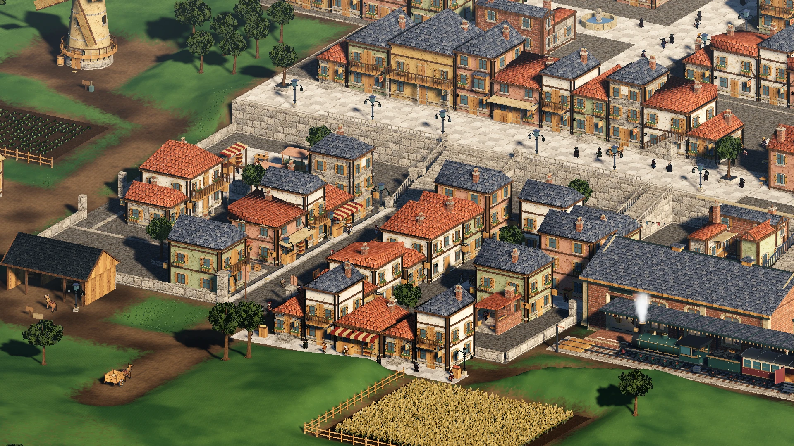

FORM STUDY / 概念示意 · 非定稿
方案设计阶段
Mono-01观察单元
一个个人非商业硬件项目。尝试让语音、视觉与两轴云台协同，把“观察与回应”带到真实空间。
当前围绕外观、结构和软硬件分工进行方案探索；语音、视觉与电脑协作能力是后续验证目标。
PERSONAL PORTFOLIO / SELECTED WORK
从游戏里的街巷与灯火，到现实中会转头的观察单元。这里记录我在游戏、设计与硬件之间的探索。
浏览作品 ↓
WUXI TOWN / IN-GAME CAPTURE一座关于灯火、秘密与有限信任的小镇。走进独立游戏官网，探索世界、角色与玩法，体验 v0.4.0 完整单人 Demo：城镇探索、室内调查与昼夜生存。
进入游戏官网↗DEVELOPMENT JOURNAL / 2026.10
走进小镇，看看这一段旅程如何成形。轻柔配乐版 · 64 秒。
打开完整视频 ↗一个个人非商业硬件项目。尝试让语音、视觉与两轴云台协同，把“观察与回应”带到真实空间。
当前围绕外观、结构和软硬件分工进行方案探索；语音、视觉与电脑协作能力是后续验证目标。
IDEAS INTO EXPERIENCES
我关注画面如何成为一个可以探索的世界，也关注一个物体如何与人产生互动。从建模、材质和光影，到游戏规则、结构与反馈，尝试把不同环节连接成完整体验。
作品集会随项目推进持续更新。已经可以体验的内容，以及仍在探索中的方向，都在这里留下记录。